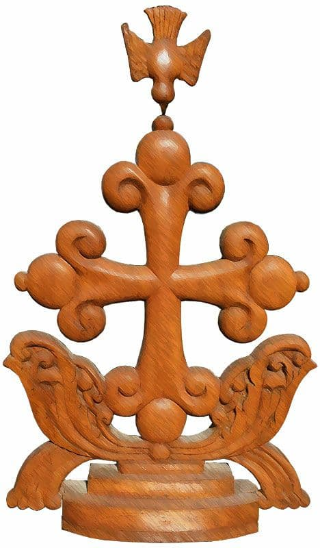

Syro Malabar Holy Qurbana
St. Alphonsa Leicester UK
(private circulation only)
Syro Malabar Holy Qurbana
St. Alphonsa Leicester UK
(private circulation only)
Entrance Song
All stand
Hymn
C:
Annaa pesaha thirunalil
Karthaavaruliya kalpanapol
Thirunaamathil chernneedam
Orumayodee baliyarppikkam
All:
Anuranjitharai theernneedam
Navamoru peedamorukkeedam
Guruvin snehamodee yaagam
Thirumunpakeyanacheedam
C:
Athyunnathamam swarlokathil
Sarveshanu sthuthi geetham (3)
All:
Bhoomiyilennum marthyanu shanthi
Prathyashayumenneckum (3)
( or )
C:
Athyunnathangalil daivathinu sthuthi
All:
Amen
C:
Bhoomiyil manushyark samadhanavum prathyashayum epozhum ennekum
All:
Amen
C:
Swargasthithanam Thaatha nin
Naamam poojithamaakaname
Nin rajyam vanneedaname
Parishuddhan nee parishuddhan
All:
Swaragasthithanam thaatha nin
Sthuthi than nisthula mahimaavaal
Bhooswargangal niranju sadha
Paavanamayi vilangunnu
C:
Vaanava maanava vrindangal
Udghoshippoo saamodham
Parishuddhan nee ennennum
Parishuddhan nee parishuddhan
Swargasthithanam thaatha nin
Naamam poojithamakaname
Nin rajyam vanneedaname
Nin hithamivide bhavickaname
Swargathennathu polulakil
Nin chittham niraveraname
Aavashyakamaamaharam
Njangalkkinnaruleedaname
Njangal kadangal poruthathupol
Njangalkkulla kadam sakalam
Paapathin kadabaadhyathayum
Angu kaninju porukkaname
Njangal pareekshayiloru naalum
Ulppeduvanidayakaruthe
Dhushtaroopiyil ninnennum
Njangale rakshicharulaname
Enthennalennaleckum
Raajyam shakthi mahathwangal
Thaavakamallo Karthave
Amen Amen enneckum
C:
Thaathanumathupol aathmajanum
Roohayckum sthuthi ennekkum
Aadhimuthalkennathu pole
Amen Amen anavaratham
All:
Swargasthithanam Thaatha nin
Naamam poojithamakaname
Nin rajyam vanneedaname
Parishuddhan nee parishuddhan
Swargasthithanam Thaatha nin
Sthuthi than nisthula mahimaaval
Bhooswargangal niranju sadha
Paavanamayi vilangunnu
Vaanava maanava vrindangal
Udhghoshippoo saamodham
Parishuddhan nee ennennum
Parishuddhan nee parishuddhan
( Or )
C: Swargasthanaya njangalude Pithave,
All: Angayude naamam poojithamakename./ Angayude rajyam varaname./ Angayude thirumanassu/ swargathileppole bhoomiyilumakename. Njangalkku aavashyakamaya aaharam/ innu njangalkku tharenname./ Njangalude kadakkaarodu njangal kshemichirickunnathupole njangalude kadangalum paapangalum njangalodum kshemickaname./ Njangale pralobhanathil ulppedutharuthe./ Dhushtaaroopiyil ninnu njangale rakshickaname./ Enthukondennal rajyavum shakthiyum mhathwavum/ enneckum angayudethakunnu. Amen.
All: Swargasthanaya njangalude Pithave/ angayude mhathwathal swargavum bhoomiyum niranjirikkunu./ Maalakhamarum manushyarum/ angu parishudhan/ parishudhan/ parishudhan ennu uthgoshikkunnu.
S:
Namukku prarthickam Samadhanam nammodukoode.
( On Sundays and ordinary Feast days )
C:
Njangalude Karthavaya Dhaivame manushya vamshathinte naveekaranathinum rakshayckum vendi angayude priyaputhran kaarunyapoorvam nalkiya dhivyarahasyangalude parikarmmathinu balaheenaraya njangale shaktharakkename. Sakalathinteyum nadha, enneckum.
All:
Amen.
( On Important Feast days )
C:
Njangalude Karthavaya Dhaivame, angayude thirunamathil urach viswasikkukayum aa viswasam paramarthathayode etuparayukayum cheyyunnavare angu shaktharakaname. Aathmashareerangale pavithrikarikkuna ee parihaara rahasyangal avar vishudhiyode parikarmam cheyatte. Nirmala hridayathodum vishudha vijarangalodum koode avar angekku purohitha shushroosha cheyukayum angu kaninj nalkiya rakshaye prathi nirantharam angaye sthuthikkukayum cheyatte. Pithavum puthranum parishudhathmavumaya sarveswara ennekum.
All:
Amen.
Sankeerthanam (Psalms 144,145,146)
C:
Karthave mama rajave
Paadum nin pukalennum njan
Sakalesha nin thirunaamam
Vaazhtheedum njan anavaratham
All:
Karthave nin sthuthi paadum
Anudhinamangaye vaazhthum njan
Naadhan mahima niranjavanum,
Paaram sthuthyanumennennum
C:
Ennaathmave paaduka nee
Karthavin sthuthi geethangal
Jeevithakaalam muzhuvan njan
Naadhanu geethikal paadeedum
All:
Njanee mannil kazhivolam
Dhaiva sthuthikal paadeedum
Arachanilo naranoruvanilo
Sharanam thedan thuniyaruthe
C:
Nallathumuchithavumallo naam
Paaduka Dhaiva sthuthigeetham
Vaazhthamavanude thirunaamam
Dhaivam nithyan sthuthyarha
All:
Chithariyorisrel janathathiye
Naadhan veendum cherkkunnu
Paniyunnorslem nagariyavan
Karuna vaaridhiyavanallo
C:
Janaraashikalude madhye njan
Nin sthuthigeetham paadeedum
Valare janathin munpil njan
Nin sthuthi paadi vanangeedum
All:
Thaathanumathupol aathmajanum
Roohayckum sthuthi enneckum
Aadhi muthalkkennathu pole
Amen amen anavaratham. ( Thurifer )
( Or )
C: Karthave, ninte koodarathil aaru vasikkum. Ninte vishudhagiriyil aaru vishramikkum?
Parishudhamaya chinthakalod ninte balipeedathinu munpake nilkuvan karthave, njangale sahayikaname.
C: Karthave, ninte koodarathil aaru vasikkum. Ninte vishudhagiriyil aaru vishramikkum?
Kara koodathe jeevikkunnavanum neethi pravarthikunnavanum hridayathil sathyamullavanum naavu kond vanchikathavanum
C: Sahodaranod thinma cheyathavanum ayalkaranethiraya preranayku vazhangathavanum.
Dushtanod kootu cherathavanum daivabhakthane maanikkunnavanum.
C: Sathya prathignja langikathavanum anyaya palisha vaangathavanum
Nirdoshikethirayi kaikooli vaangathavanum. Ingane jeevikkunavan neethimanakunu. Avan orikkalum ilakukayilla.
C: Pithavinum puthranum parishudhathmavinum sthuthi.
Aadhimuthal ennekkum amen.
S: Halleluia, Halleluia, Halleluia. Samadhanam nammodu Koode
(On Sundays and Feast days)
C: Njangalude Karthavaya Dhaivame, angayude snehathinte parimalam njangalil veeshukayum, angayude sathyathinte jnjanam njangalude aathmakkale prakashippickukayum cheyyumpol swargathil ninnu prathyakshanakunna angayude thirukkumarane sweekarickuvan njangalkku idayakatte. Sakalasoubha- gyangalum nanmakalum niranju mudichoodi nilkkunna sabhayil nirantharam angaye sthuthickuvanum mahath- wappeduthuvanum njangal yogyarakatte. Enthukond- ennal, angu ellathinteyum srushtavakunnu. Sakalathin- teyum nadha, enneckum.
All: Amen
(On ordinary days)
C: Njangalude Karthavaya Dhaivame, angu nalkiyitullathum ennal krithanjatha prakashippikuvan njangalkk kazhiyathathumaya ella sahayangalkum anugrahangalkumayi sakala soubhagyangalum nanmakalum niranju mudichoodi nilkkunna sabhayil njangal angaye nirantharam sthuthikukayum mahathwapeduthukayum cheyatte. Angu sakalthintem nadhanum srishtavumakunu. Pithavum puthranum parishudhathmavumaya sarveshwara ennekum.
All: Amen
(All bow at the sanctuary)
All:
Sarvadhipanam Karthave
Ninne vanangi namickunnu (all bow)
Eesho nadha vinayamode
Ninne namichu pukazhthunnu
All:
Marthyanu nithya mahonnathamam
Utdhanam neeyarulunnu
Akshayamavanude aathmavin
Uthama rakshayumekunnu
( Or )
All: Sakalathinteyum nadha, ninne njangal sthuthikkunu. Esho mishihaye, ninne njangal pukazhthunnu. Enthukondennal nee njangalude shareerangale uyirpikkunavanum aathmakkale rakshikkunavanum aakunu.
S: Namukku prarthickam. Samadhanam nammodukoode.
C: Ente Karthave, nee sathyamayum njangalude shareerangale uyirppikkunnavanum aathmakkale rakshickunnavanum jeevane nithyam paripaalickunnavanumakunnu. Njangal eppozhum ninakku sthuthiyum kruthanjathayum aaradhanayum samarppickuvan kadappettavarakunnu. Sakalathinteyum nadha enneckum.
All: Amen
All:
Shabdhamuyarthi paadiduvin
Sarvarumonnai paadiduvin
Ennennum jeevickum
Sarveshwarane vaazhthiduvin.
Paripaavananam sarvesha
Paripaavananam balavane
Paripaavananam amarthyane
Nin krupa njangalkkekaname.
( Or )
S: Sahodarare, ningal swaramuyarthi jeevikkuna daivathe prakeerthikkuvin.
All: Parishudhanaya daivame
Parishudhanaya balavaane,
Parishudhanaya amarthyane,
Njangaludemel kripayundakename.
S: Namukku prarthickam, samadhanam nammodukoode
C: Vishuddharil sampreethanayi vasikkunna parishuddhanum sthuthyarhanum balavaanum amarthyanumaya Karthave angayude swabhavathinothavidham eppozhum njangale kadaakshikkukayum anugrahikkukayum njangalodu karunakaanikkukayum cheyyaname. Pithavum Puthranum Parishuddhathmavumaya sarveswara, enneckum.
All: Amen
S: Sahodharare ningal irunnu shradhyode Kelkkuvin.
( All sit )
( The reader goes to the left side of the celebrant and facing the congregation says)
Reader 1: Ente Sahodharare ….. Pusthakatthil ninnulla vaayana.
(Bows for blessing)
Guro aashirvadhikkaname.
The celebrant blesses the reader, saying:
C: Dhaivam ninne anugrahickatte.
At the end of the reading
All: Dhaivamaya Karthavinu sthuthi.
Reader 2: Ente Sahodharare …. Pusthakatthil ninnulla vaayana.
(Bows for blessing)
Guro aashirvadhikkaname.
The celebrant blesses the reader, saying:
C: Dhaivam ninne anugrahickatte.
At the end of the reading
All: Dhaivamaya Karthavinu sthuthi.
S: Prakeerthanam aalapikkuvanayi ningal ezhunnelkkuvin.
(All stand)
C:
Ambaramanavaratham
Dhaiva mahathwathe
Vaazhthippaadunnu
Dhivyathmavin geethikalal
Halleluiah geethikalal
Karthavin thirudivasathin
(Dhanyan Thomashleeha than ..... name of Saint)
Nirmalamakumanusmaranam Kondadam innee vedhikayil.
S:
Than karaviruthallo
vaanavithanangal
Udhghoshikkunnu
All:
Dhivyathmavin geethikalal
Halleluiah geethikalal
Karthavin thirudivasathin
(Dhanyan Thomashleeha than ....... name of Saint)
Nirmalamakumanusmaranam
Kondadam innee vedhikayil.
S:
Pakalukal pakalukalo
davirathamaviduthe
Pukalura cheyyunnu
All:
Dhivyathmavin geethikalal
Halleluiah geethikalal
Karthavin thirudivasathin
(Dhanyan Thomashleeha than ....... name of Saint)
Nirmalamakumanusmaranam
Kondadam innee vedhikayil.
C:
Nithyapithavinum
Suthanum Roohayckum
sthuthiyundakatte
All:
Dhivyathmavin geethikalal
Halleluiah geethikalal
Karthavin thirudivasathin
(Dhanyan Thomashleeha than ....... name of Saint)
Nirmalamakumanusmaranam
Kondadam innee vedhikayil.
S:
Aadhiyileppole
Ippozhumeppozhum
Enneckum amen.
All:
Dhivyathmavin geethikalal
Halleluiah geethikalal
Karthavin thirudivasathin
(Dhanyan Thomashleeha than ....... name of Saint)
Nirmalamakumanusmaranam
Kondadam innee vedhikayil.
S: Halleluiah, Halleluiah, Halleluiah. Namukku prarthickam. Samadhanam nammodu koode.
( For Sunday and days of commemoration )
C: Njangalude Karthavaya Dhaivame, Angayude jeevadhayakavum dhaivikavumaya kalpanakalude madhuraswaram shravikkunnathinum grahikkunnathinum njangalude buddhiye prakashippikkaname. Athuvazhi aathmashareerangalkku upakarickunna snehavum sharanavum rakshayum njangalil phalamaniyunnathinum nirantharam njangal angaye sthuthikkunnathinum angayude kaarunyathalum anugrahathalum njangale sahayickaname. Pithavum Puthranum Parishuddhathmavumaya sarveshwara, enneckum.
All: Amen
( On normal days and sundays of lent season )
C: Sarvanjanaya bharanakarthavum thante bhavanthil vasikunavarude vismayaneeyanaya paripalakanum sakala nanmakaludeyum soubagyangaludeyum uravidavumaya daivame, angayod njangal apekshikkunnu. Angayude swabhavathinotha vidham epozhum njangale kadakshikukayun anugrahikkukayum njangalod karuna kanikukayum cheyaname. Pithavum puthranum parishudhathmavumaya sarveswara ennekum.
All: Amen
( All sit )
( The reader goes to the lectern at the right side of the celebrant and stands facing the congregation )
Reader: Sahodharare vishuddha ….. Sleeha ezhuthiya lekhanam.
(Bows towards the celebrant)
Reader: Guro aashirvadhikkaname.
The celebrant blesses the reader, saying:
C: Mishiha ninne anugrahickatte.
At the end of the reading
All: Nammude Karthavaya Mishihacku sthuthi.
(Thurifer )
S: Halleluiah, Halleluiah, Halleluiah.
( All Stand )
Suvisheshageetham
All:
Halleluiah paadeedunnen
Halleluiah, Halleluiah
Nallorashayamen manathaaril
Vannu niranju thulumpeedunnu
Rajavin thirumunpil keerthana
madhuvai Njanathozhukkeedatte
Ettamanugraha poorithanam kavi
Than thoolikapolen naavippol
Thaathanumathupol suthanum
Parishuddhathmavinum sthuthiyuyaratte
Aadhi muthalkeyinnum nithyavumayi
Bhavicheedatte, Amen.
Halleluiah paadeedunnen
Halleluiah, Halleluiah.
S: Namukku shradhaapoorvam ninnu parishuddha suvishesham shravickam.
( At the bema, celebrant stands facing the congregation and two servers with lit candles on either side. The server carrying the censer stands in front of the bema and incenses during the reading).
C: Samadhanam ningalodu koode.
All: Angayodum angayude aathmavodum koode.
C: Vishuddha …… ariyichya nammude Karthaveesho Mishihayude parishuddha suvishesham.
All: Nammude Karthavaya Mishihaycku sthuthi.
( At the end of the reading, the celebrant closes the book of the Gospel and kisses it)
All: Nammude Karthavaya Mishihaycku sthuthi.
( All Sit )
Homily
( After Homily All stand )
Karozutha—1 (Samooha Prarthana)
S:
Namukellavarkum santhoshathodum Uthsahathodum koode (On ordinary days: Anuthapathodum Shradthayodum) ninnu Karthave njangaludemel krupayundakename ennu prarthickam.
All:
Karthave njangaludemel krupayundakename.
S:
Karunyavanaya pithave aashwasadhayaka naya Dhaivame angayodu njangal prarthickunnu.
All:
Karthave njangaludemel krupayundakename.
S:
Njangalude rakshakanum paripaalakanum sakalathinteyum dhaathavumaya angayodu njangal prarthickunnu.
All:
Karthave njangaludemel krupayundakename.
S:
Samastha lokathinteyum sakala sabhakaludeyum samadhanathinum aikyathinum nilanilppinum vendi angayodu njangal prarthickunnu.
All:
Karthave njangaludemel krupayundakename.
S:
Njangalude rajyathinum mattella rajyangalkkum avayil vasikkunna vishwasikalkkum vendi angayodu njangal prarthickunnu.
All:
Karthave njangaludemel krupayundakename.
S:
Anukoolamaya kaalavasthayckum samrudhamaya vilavukalkkum subhikshamaya valsarathinum lokam muzhuvanteyum aishwaryathinum vendi angayodu njangal prarthickunnu.
All:
Karthave njangaludemel krupayundakename.
S:
Mishihayude sabha muzhuvanteyum thalavanaya njangalude parishuddha pithavu Mar Francis pappayudeyum njangalude sabhayude thalavanum pithavumaya Mar. George Alancherry Shreshta methrappoleethayudeyum, njangalude meladhyakshnanum pithavumaaya Mar Joseph Srampickal methranteyum avarude saha shushroo shikaludeyum kshemathinu vendiyum angayodu njangal prarthickunnu.
All:
Karthave njangaludemel krupayundakename.
S:
Njangalude Karthavaya Mishihaye ninte krupayal njangale ellavareyum rakshikkaname. Ninte shanthiyum samadhanavum njangalil vardhippickukayum njangale anugrahikkukayum cheyyaname.
All:
Karthave njangaludemel krupayundakename.
S:
Namukkellavarkkum nammeyum nam ororuthareyum Pithavinum Puthranum Parishuddhathmavinum samarppickam.
All:
Njangalude Dhaivamaya Karthave, angecku njangal samarppickunnu.
The celebrant recites the following with extended hands at the end of the Karozutha.
C: Karthave, balavaanaya Dhaivame, angayodu njangal vinayapoorvam prarthickunnu. Angayude krupavaram njangalil nirayckaname. Angayude dhaanangal njangalude karangal vazhi varshikkename. Angayude krupayum anugrahavum angu kaarunya- thirekathal thiranjedutha angayude ajaganamaya janam muzhuvanteyum paapangalude kadangalude mochanathinum poruthickum kaaranamakette. Pithavum Puthranum Parishuddhathmavumaya sarveshwara, enneckum.
All: Amen.
S: Karthave aashirvadhickaname. Sahodharare ningal kaivappinayi thala kunickukayum aashirvadham sweekarikkukayum cheyyuvin.
Everybody bows. The celebrant bows and says the following prayer in a low voice.
(On Sundays and Feast days)
C: Karthave shakthanaya Dhaivame, angayude abhishikthan kadinamaya peedakalanubhavchu veendedutha ajagnamaya parishuddha katholicka sabha angayudethakunnu. Dhaiva swabhavathil angumayi onnayirikkunna Parishuddhatmavinte krupavarathal yadhartha pourohithyathinte padhavikal kaivappu vazhi nalkappedunnu. Viswasikalkku aathmeeya shusroosha cheyyunathinu parishuddhamaya sabha shareerathile savishesha amgangalakuvan nissararum balaheenarumaya njangale angu kaarunyathirekathal yogyarakki. Karthave angayude krupavaram njangalil nirakkukayum angayude dhaanangal njangalude karangal vazhi varshikkukayum cheyyaname. Angayude kaarunyavum anugrahavum njangaludeyum angu thiranjedutha ee janathinteyum mel undakumarakatte.
( On Week days and during Lent)
C: Njangalude Karthavaya Dhaivame, saarvarathri- kavum shlyhikavurnaya sabhayudemel angayude karunaniranja valamkai neettaname. Dhrushyavum adhrushyavumaya sakala vipathukalilum ninnu athine samrakshikkaname. Bhakthiyodum shrad dhayodum vishuddhiyodum koode angayude munpake shushroosha cheyyuvan njangalellavareyum dhayapoorvam yogyarakkaname.
Resuming a straight posture, the celebrant prays in a loud voice.
C: Karunanidhiyaya Dhaivame, njangalellavarum onnuchernnu angaye njangalumayi ramyathappedu- thunna neethiyude pravarthikalal jeevithakalam muzhuvan angaye yadhochitham preethippeduthuvan njangale anugrahikkaname. Angecku sthuthiyum bahumaanavum kruthajnjathayum aaradhanayum nirantharam samarppikkuvan njagaleyogyarakkukayum cheyyaname. Pithavum Puthranum Parishuddhath- mavumaya sarveswara, enneckum.
All: Amen.
Mammodheesa sweekarickukayum jeevante adayaalathal mudhritharakkukayum koode cheythavar vishuddhabhakthiyodum shraddhayodum rahasyangalil pankukollatte.
(Hymn of the Divine Mysteries)
Choir:
Karthavil njan dhruddamayi sharanapettu
All:
Mishiha Karthavin thirumey ninavumitha
Paavanabalipeede
Sneha bhayangalodanayuka naam
Akhilarumonnay sannidhiyil
Vaanava nirayodu chernnevam
Paadam Dhaivam parishuddhan
Parishuddhan nithyam parishuddhan.
(Hymn)
C:
Thaathanumathupol aathmajanum
Dhivya roohaykum sthuthiyennum
Dhaivambikaeyum mar yauseppineyum
Saadharamortheedam paavanamee baliyil.
All:
Aadhiyileppol, ennennaeckum Amen amen,
Suthanude preshithare,
Ekajasnehithare,
Shanthi labhichiduvaan,
Ningal prarthippin.
C:
Sarvarumonnai paadeedatte Amen, amen,
Marthomayeyum,
ninasakshikaleyum,
Salkkarmikaleyum,
baliyithil ortheedam.
All:
Nammude koode balavaanakum,
Karthavennenneckum,
Rajavam Dhaivam,
nammodothennum,
Yaakkobin Dhaivam,
nammude thunayennum.
C:
Cheriyavarellam valiyavaroppam
Kaathuvasikkunnu.
Karthavennenneckum,
Mrutharellarum nin,
mahithoddhanathil,
Sharanam thedunnu,
uddhitharayiduvaan.
All:
Thirusannidhiyil hrudhayagathangal,
Choriyuvinennenneckum,
Nombum prarthanayum,
pashchathapavumai,
Thrithwathe modhal,
nithyam vaazhtheedam.
( Or )
C: Pithavinum puthranum parishudhathmavinum sthuthi. Daiva mathavaya kanya mariyathinte smarana vishudha balipeedathinkal undakatte.
Adhimuthal ennekum amen. Daivaputhrante sleehanmare, ekajathante snehithare, lokathil samadhanamundakuvan vendi prarthikuvin.
C: Daivajanamellam amen amen ennu udhgoshikate. Vijayam varicha neethimanmarudeyum makudam choodiya rakthasakshikaludeyum smaranayod koode nammude pithavaya marthomasleehayude orma vishudha balipeedathinkal undakatte.
Balavanaya karthavu nammod koode. Nammude rajavu nammod koode. Nammude daivam nammod koode. Yakobinte daivam nammude sahayiyum.
Cheriyavarum valiyavarum ninte sthuthyarhamaya udhanam vazhi nee mahathwathode uyirpikumena pratheekshiyil marichavarellavarum nidra cheyunu.
All: Aviduthe sannidhiyil ningalude hridayangal thurakkuvin. Upavasavum prarthanayum anuthapavum vazhi mishihayeyum aviduthe pithavineyum parishudhathmavineyum namuk prasadhipikkam.
C: Sarvashakthanum Pithavumaya ekadhaivathil njangal vishwasickunnu.
C&All: Dhrushyavum adhrushyavumaya sakalathinteyum srashtavil njangal viswasickunnu. Dhaivathinte ekaputhranum / sakala srushtikalkkum munpulla aadhyajaathanum / yugangalkkellammunpu Pithavilninnu janichavanum / ennal srushtickappeda- thavanum / eka Karthavumaya Eeshomishihayil njangal vishwasickunnu. / Avidunnu sathyaDhaivathil ninnulla sathyaDhaivavum / Pithavinodukoode ekasathayu- makunnu. / Avidunnuvazhi prapancham samvidhanam cheyyappedukayum / ellam srushtikkapedukayum cheythu. Manushyaraya namukku vendiyum nammude rakshaykkuvendiyum / avidunnu swargathil ninnirangi. Parishuddhathmavinal kanyakaMariyathil ninnu shareeram sweekarichu / manushyanayi pirannu. Panthiyos Peelathosinte kaalathu / peedakal sahickukayum / sleevayil thrayckapettu marickukayum / samskarikkappedukayum ezhuthappettirickunnathu pole / moonnamdhivasam uyirthezhunnelkkukayum cheythu. / Avidunnu swargathilecku ezhunnalli / Pithavinte valathubhaagathirickunnu. / Maricha- vareyum jeevickunnavareyum vidhickuvan/ avidunnu veendum varuvaanirickunnu. Pithavil ninnum Puthranil ninnum purappedunna / sathyathmavum jeevadhathavumaya / eka Parishuddhatmavilum njangal vishwasickunnu. Ekavum parishuddhavum slaihi- kavum saarvathrikavumaya sabhayilum / njangal vishwasickunnu. Paapamochanathinulla ekamammo- dheesayum / shareerathinte uyirppum / nithyayussum njangal ettu parayukayum cheyyunnu. Amen.
C: Sakalathinteyum nadhanaya Dhaivam thante sthuthikal aalapickuvan ninne shakthanakkatte.
Facing the congregation
S: Namukku prarthickam, samadhanam nammodu koode. Paathriyarkkeesumarum methranmarumaya / nammude pithakkanmar / purohithanmar, shushrooshikal ennivarudeyum / brahmacharikaludeyum kanyakakaludeyum / nammude maathapithakkanmar / puthree puthranmar / sahodhari sahdharanmar ennivarudeyum/ ormyacharichu kondu / ningal prarthickuvin. / Mishihayude snehitharum vishwasikalumaya / ella bharanakarthakkaleyum / sathyavishwasathode marichu / ee lokathil ninnu verpettu poya / ellavareyum anusmarickuvin. Mishihayude krupayal / ee bali namukku sahayathinum rakshaykkum / swargarajyathil nithya jeevanum kaaranamakatte.
C: Karthave aasheervadhickaname.
Turning towards the assembly and extending his arms, he invites the assembly, saying:
Ente sahodharare ee Qurbana ente karangalvazhi poorthiyakuvan ningal enicku vendi prarthickuvin.
All: Sakalathinteyum nadhanaya Dhaivam / thante abheeshtam niravettuvan namme shaktharakkatte. / Ee Qurbana avidunnu sweekarickatte. / Angeckum njangalkkum lokam muzhuvanumvendi / angu samarppikkunna ee baliyil avidunnu sampreethanakukayum cheyyatte. Amen.
The celebrant says the following prayer ‘Kussepe” in a low voice.
ANAPHORA
( The Qurbana of the Venerable Teachers of the East,Mar Addai and Mar Mari, the disciples of St. Thomas the Apostle)
C: Njangalude Karthavaya Dhaivame, angunjangaludemel varshicha samruddhamaya anugrahangale prathi njangal angecku nandi parayunnu. Angayude abhishikthante shareera rakthangalaakunna dhivyarahasyangalude shushrooshakaraakuvan eliyavarum paapikalumayirunnittum njangale angu kaarunyathirekathal yogyarakki. Angu nalkiya ee dhaanam thikanja snehathodum uracha vishwasathodum koode parikarmam cheyyuvan njangale shaktharakkanamennu angayodu njangal apekshickunnu.
The celebrant kisses the altar, crosses hishands over his chest, and prays:
C: Njangal angecku sthuthiyum bahumaanavum kruthanjathayum aaradhanayum samarppickunnu. (The celebrant crosses himself) Ippozhum eppozhum enneckum.
All: Amen
The celebrant blesses the people
C: Samadhanam ningalodu koode.All: Angayodum angayude aathmavodum koode.
One of the servers receives the sign of peacefrom the celebrant and offers peace to the other servers and the assembly.
S: Sahodharare, Mishihayude snehathil ningal samadhanam aashamsickuvin.
Facing thecongregation
S: Namukkellavarkkum anuthaapathodum vishuddhiyodum koode / Karthavinu nandi parayukayum / aviduthe vilichapekshikkukayum cheyyam. / Ningal aadharapoorvam ninnu / ivide anushtikkappedunnavaye sookshichu veekshickuvin. Bhayabhakthi janakamaaya rahasyangal koodhasha cheyyappedunnu. Purohithan (Purohithashreshtan...) thante maadhyastham vazhi samadhanam samrudhamaakunnathinuvendi / prarthickuvan thudangunnu. Kannukal thaazhthi, vichaarangal swargathilecku uyarthi, nishabdharayi ekaagrathayodum bhakthiyodum koode / ningal hrudhayathil prarthickuvin. / Samadhanam nammodu koode.
The server brings the thurible and frankincense. The celebrant blesses it. The celebrant incenses the altar. He returns the censer to the server.
( Hymn )
C:
Mishihakarthavin krupayum
Dhaivapithavin snehamathum
Rooha than Sahavaasavumee
nammodothundakatte.
All:
Amen.
C:
Uyarangalileckuyaratte
Hrudhaya vikaara vichaarangal. (2).
All:
Poorvapithavam Abraham,
Isahac, Yaakkobennivar than
Dhaivame nithyam aaraadhyn
Rajave, nin sannidhiyil.
C:
Akhila charaachara Karthavam
Dhaivathinu baliyarppippoo
All:
Nyayavumaanathu yukthavumam ( 2 )
( Or )
C: Nammude karthavesho mishihayude kripayum pithavaya daivathinte snehavum prishudhathmavinte sahavaasavum naamellavarodum koode undayirikatte. Ippozhum eppozhum ennekum.
All: Amen
C: Ningalude vijarangal unnathathilek uyaratte.
All: Abrahathintem Isahaakintem Yakobintem daivame, aaradhyanaya rajave, angayude sannidhiyilekk.
C: Sakalathintem nadhanaya daivathinu kurbana arpikkapedunu.
All: Athu nyayavum yukthavumakunu.
S: Samadhanam nammodu koode
C: Pithavum Puthranum Parishuddhathmavumaya sarveshwara, angayude mahatwameriya thrithwathinte aaradhyamaya naamam ella adharangalilum ninnu sthuthiyum ella naavukalilum ninnu kruthanjathayum ella srushtikalilum ninnu pukazhchayum arhickunnu. Enthukondennal, angu lokatheyum athilulla sakalatheyum kanivode srushtikkukayum manushya vamshathodu alavatta krupa kaanickukayum cheythu. Swargavaasikalude aayirangalum maalakhamarude pathinayirangalum mahonnathanaya angaye kumbittaraadhickunnu. Agnimayanmarum aroopikalumaya swargeeyasainyangal angayude naamam prakeerthickunnu. Parishuddharum aroopikalumaya krovenmarodum srappenmarodum chernnu nadhanaya angecku avar aaradhana samarppickunnu.
The celebrant kisses the altar. Subsequently, he raises his hands and sing:
C:
Onnai ucha swarathilavar
thirussannidhiyil anavaratham
sthuthigeethangal paadunnu.
All:
Dhaivam nithyamahathwathin
Karthavennum parishuddhan
Balavaaneeshan parishuddhan
Mannum vinnum nirayunnu
Mannavanavanude mahimakalal
Unnatha veedhiyiloshana
Dhaaveedhin suthanoshana
Karthavin thirunaamathil
Vannavanum yugarajavai
Veendum varuvonum dhanyan
Unnathaveedhiyiloshana
Oashana.
( Or )
C: Uyarna swarathil idavidathe sthuthichkond avar onnuchernu udhgoshikukayum cheyunnu.
All: Bhalavaanum karthavumaya daivam parishudhan parishudhan parishudhan. Aviduthe mahathwathal swargavum bhoomiyum niranjirikkunu. Unnathangalil oshana. Davidinte puthranu oshana. Karthavinte namathil vannavum varuvanirikkunavanumayavan anugraheethanakunu. Unnathangalil oshana.
C: Karthavaya Dhaivame, swargeeya ganangalodu koode angecku njangal kruthanjatha samarppickunnu. Angayil maranjirickunna aathmajaathanum angayodu sadhrushyanum angayil ninnulla prakashavum angayude satthayude prathishchayayumaya vachanamaakunna Dhaivathe njangal vaazhthunnu. Angayodulla samaanatha nilanirthenda kaaryamayi pariganickathe avidunnu thannetthanne shoonyanakki, dhaasante roopam sweekarichu, vivekavum buddhiyumulla amarthyamaya aathmavodum, marthyamaya shareerathodum koode paripoorna manushyanayi sthreeyil ninnu jaathanayi. Niyamathinu adheenaraayavare uddharickuvan niyamathinu vidheyanavukayum njangalude rakshayude smaarakam erppedutthukayum cheythu. Rakshakaramaya ee rahasyam thirusannidhiyil njangal arppickunnu.
C: Karthavaya Dhaivame, angayude priyaputhran njangale padippichathupole aviduthe peedanubhava- thinte smarana njangal aacharickunnu. Thaan elppichu kodukkappetta raathriyil Eesho nirmalamaya thrukkarangalil appameduthu (takes the paten with both hands) swargathilecku, (raises his eyes towards heaven) aaradhyanaya Pithave, angayude pakkalecku kannukal uyarthi, vaazhthi, + + + vibhajichu, shishyanmarkku nalkikkondu arulcheythu "Ithupaapamochanathinayi ningalkku vendi vibhajickappedunna ente shareeramakunnu. Ningalellavarum ithil ninnu vaangi bhakshickuvin."
All: Amen.
C: Aprakaaram thanne kaasayumeduthu (he takes it with both hands) kruthajathastho-thram cheythu, vaazhthi, + + + avarkku nalkikkondu arul cheythu: "Ithu paapamochanathinayi chinthappedunna puthiya anekarkku udampadiyile vendi ente rakthamakunnu. Ningalellavarum ithil ninnu vaangi paanam cheyyuvin."
All: Amen.
C: "Njan ee cheythathu ningal ente naamathil onnichu koodumbol ente ormmakkayi cheyyuvin."
(All bow in reverence )
C: Karthave, nee njangalodu kalppichathu-pole, eliyavarum balaheenarum aakularumaya ee dhaasar ninte thirussannidhiyil orumichu koodiyirickunnu.Nandi prakashippickuvan kazhiyatha vidham athra valiya anugrahamaanu nee njangalku nalkiyirickunnathu. Ninte dhaivikajeevanil njangale pankukarakkuvan nee njangalude manushya swabhaavam sweekarickukayum adhappathichu poya njangale samuddharickukayum mrutharaya njangale jeevippickukayum cheythu. Paapikalaya njangale kadangal kshamichu vishudheekarichu. Njangalude buddhicku prakasham nalki, nljangalude shathrukkale paraajitharakki. Njangalude balaheenamaya prakruthiye ninte samrudhamaya anugrahathal mahathwamaniyickukayum cheythu.
C: Nee njangalkku nalkiya ella sahaayangalkkum anugrahangalkkumayi njangal ninakku sthuthiyum bahumaanavum kruthanjathayum aaradhanayum samarppickunnu. Ippozhum eppozhum enneckum.
All: Amen.
S: Hrudhayam kondu ningal prarthikkuvin. Samadhanam nammodu koode.
C: Karthave, shakthanaya Dhaivame, pradhanacharyanum saarvathrikasabhayude thalavanum bharanaadhikariyumaya Romayile Mar (name) pappacku vendiyum njangalude sabhayude thalavanum pithavumaya Mar (name) shreshta methrappoleethakku vendiyum njangalude meladhyakshanum pithavumaya Mar (name) methrappoleethacku (methranu) vendiyum vishudha katholika sabha muzhuvanum vendiyum purhithanmar, bharanakarthakkal, meladhkaarikal ennivarkku vendiyum ee Qurbana sweekarickaname.
All: Karthave ee Qurbana sweekarickaname.
C: Ella pravaachakanmarudeyum shleehanmarudeyum rakthasaakshikaludeyum vandakarudeyum bahumaanathinu vendiyum angayude sannidhiyil preethijanakamaya vidham varthicha neethimaanmarum vishuddharumaya ella pithakkanmarkku vendiyum ee Ourbana sweekarickaname
All: Karthave ee Ourbana sweekarickaname.
C: Kleshitharum dukhitharum dharidhrarum peeditharum rogikalum aakularumaya ellavarkkum vendiyum njangalude idayil ninnu angayude naamathil verpirinju poya ella marichavarcku vendiyum angayude kaarunyathe prathyashapoorvam Kaathirickunna ee janathinu vendiyum ayogyanaya enicku vendiyum ee Ourbana sweekarickaname
All: Karthave ee Qurbana sweekarickaname.
C: Karthavaya Dhaivame, angu njangale padippichathu pole nirmmalavum vishudhavumaya ee balipeedathinmel angayude abhishikthante shareera rakthangal njangal arppickunnu. Ee ormmayaacharanathil Dhaivamathavaya Kanyaka Mariyathinteyum angayude thirusannidhiyil sampreethi kandethiya neethimaanmarum vishuddharumaya pithakkamarudeyum paavana smarana angayude avarnaneeyavum samruddhavumaya krupayal samjathamakkname. Jeevithakaalam muzhuvan angayude shanthiyum samadhanavum njangalkku nalkaname. Angu maathramanu yadhaartha pithavaya Dhaivam ennum angayude priya puthranaya Eesho Mishihaye angu ayachuvennum bhoovasikalellavarum ariyatte. Njangalude karthavum Dhaivavumaya Mishiha vannu jeevadhaayakamaya suvishesham vazhi pravaachakanmar, shleehanmar, rakthasakshikal, vandhakanmar, vedhapaaramgathanmar, methranmar, purohithanmar, shushrooshikal ennivarkkum visuddha mammodheesayude sajeevavum jeevadhaayakavumaya adayaalathal mudhritharum (The celebrant marks the altar with the sign of the cross.) parishuddha katholicka sabhayude santhaanangalumaya ellavarkkum aavashyakamaya nyrmmallyathinteym visudhiyudeyum maargam padippichuvennum ella manushyarum ariyatte. Karthave, eliyavarum balaheenarum kleshitharumaya ee dhaasarum angu nalkiya maathruka parambaraagathamayi sweekarichu angayude naamathil orumichu koodi ippol thirusannidhiyil nilkkunnu. Njangalude nadhanum rakshakanumaya Eesho Mishihayude peedanubhavathinteyum maranathinteyum samskarathinteyum uddhanathinteyum mahaneeyavum bhayabhakthijanakavum parishuddhavum jeevadhayakavum dhaivikavumaya ee rahasyathe santhoshathode njangal smarickukayum sthuthickukayum anushtickukayum cheyyunnu.
The celebrant holds his right hand crossed over his left over the sacred mysteries in the sign of the cross.
C: Karthave ninte parishuddhathmavu ezhunalli varatte.
S: Ningal nishabdharayai aadharapoorvam prarthickuvin / samadhanam nammodu koode.
C: Ninte dhaasarude ee Qurbanayil avidunnu aavasichu ithine aasheervadhickukayum pavithreekarickukayum cheyyate. Ithu njangalkku kadangalude poruthickum paapangalude mochanathinum marichavarude uyirppilulla valiya prathyashackum ninne preethippeduthiya ellavarodum onnichu swargarajyathil navamaaya jeevithathinum kaaranamakate.
C: Karthavaya Dhaivame, njangalkkuvendiyulla angayude mahaneeyavum vismayaavahavumaya ee rakshapaddhathiyekurichu angaye njangal nirantharam prakeerthickunnu. Angayude abhlshikthante amoolya rakthathal rakshickappetta sabhayil santhoshathodum prathyashayodum koode njangal angecku kruthanjatha arppickukayum cheyyunnu.
( Celebrant Kisses the alter )
( Hymn )
C:
Athipoojithamam nin thirunaamathinitha Sthuthiyum bahumathiyum, sthrothram keerthanavum Nadha njangalanackunnu ippozhumenneyckum.
All:
Amen.
C: Sajeevavum parishudhavum jeevadayakavumaya angayude namathinu sthuthiyum bahumanavum krithagnjathayum aaradhanayum njangal samarpikkunu. Ippozhum eppozhum ennekum.
All: Amen.
( Congregation kneels )
C: Dhaivame, angayude kaarunyathinottha vidham ennodu dhaya thonnename.
All: Angayude karunyathirekathinu anusrithamayi ente paapangal maayichu kalayaname.
Raising his hands
C: Karthave, anugrahickename. Njangalude Karthavaya Dhaivame, njangal ayogyarakunnu. Njangal theerthum ayogyarakunnu. Enkilum sthuthyarhavum parishuddhavum, jeevadhayakavum dhaivikavumaya ee rahasyangalilecku angayude kaarunyam njangale aduppickunnu.
The celebrant kisses the altar, with his hands held to his chest in the form of the cross. He raises the Host and says:
C: Njangalude Karthaveeshomishihaye, ninte thirunaamathinu sthuthiyum, naadhanaya ninacku aaradhanayum eppozhum undayirickatte. Sajeevavum jeevadhayakavumaya, ee appam swargathil ninnu irangiyathum lokathinu muzhuvan jeevan nalkunnathumakunnnu. Ithu bhakshickunnavar marickukayilla. Prathyutha, paapamochanavum rakshayum prapickukayum nithyam jeevickukayum cheyyum.
( Hymn )
All:
Njan swargathil ninnirangiya Jeevanulla appamakunnu
Rakshakaneesho than
Shishyare ariyicha
Dhivya rahasyamitha
Swargathil ninnagathamam
Jeevan nalkidumappam njan
Snehamodenne kaikkolvon
Ennil nithyam jeevickum
Nedumavan swarggam nishchayamai.
The celebrant bows, he crosses himself and says the following prayer in a loud voice.
C: Nammude KarthaveeshoMishihayude krupayum Pithavaya Dhaivathinte snehavum Parishuddhathmavinte sahavaasavum naamellavarodum koode undayirickatte. Ippozhum eppozhum enneckum.
Amen
S: Nammude rakshakante / amoolyamaya shareera rakthangalude rahasyangale namukellavarkum bhakthyadharangalode sameepickam. Anuthaapathil ninnullavaakunna sharanthode/ aparaadhangalil ninnu pinthirinjukondum/ paapangalekkurichu pashchathapichukondum/ sahodhararude thettukal kshemichukondum/ namukku sakalathinteyum nadhanaya Dhaivathodu/ krupayum paapamo chanavum yaachickukayum cheyyam.
All:
Karthave, angayude dhaasarude paapangalum aparaadhangalum kshemickaname.
S:
Bhinnathakalum kalahangalum vedinju nammude manasakshiye shuddheekarickam.
All:
Karthave, angayude dhaasarude paapangalum aparaadhangalum kshemickaname.
S:
Shathruthayilum vidweshathilum ninnu nammude athmakkale vimukthamackam.
All: Karthave, angayude dhaasarude paapangalum aparaadhangalum kshemickaname.
S: Vishudha Qurbana sweekarickukayum Parishuddhathmavinal pavithreekarickappedukayum cheyyam.
All: Karthave, angayude dhaasarude paapangalum aparaadhangalum kshemickaname.
S: Yojippodum aikyathodum koode dhivyarahsyangalil pankukollam.
All: Karthave, angayude dhaasarude paapangalum aparaadhangalum kshemickaname.
S: Karthave, iva njangalude shareerangalude uyirppinum aathmakkalude rekshackum kaaranamakatte.
All: Nithya jeevanum kaaranamakatte, enneckum, Amen.
S: Namukku prarthickam. Samadhanam nammodu koode.
C: Karthavaya Dhaivame, angayude dhaasarude paapangalum aparaadhangalum kaarunyapoorvam kshemickaname. Mahonnatha Dhaivamaya angaye swargarajyathil sakala vishuddharodumonnichu sthuthickuvan njangalude adharangale pavithreekarickukayum cheyyaname.
( Congregation stands )
The celebrant stands erect and says in a loud voice with his hands extended
C: Karthavaya Dhaivame, kaarunyapoorvam angu njangalkku nalkiya manovishwasathodukoode angayude sannidhiyil eppozhum nirmmalahrudhayarum prasannavadhanarum nishkalankarumayi vyaaparickuvan njangale yogyarackaname. Njangalellavarum onnuchernnu angaye vilichu iprakaram apekshikkunnu.
( For Sunday and days of commemoration )
C: Karthave, njangalude idayil ninte samadhanavum hridayangalil shanthiyum pularthaname. Njangalude navukal ninte sathyam pragoshikatte. Njangalude vadhanangale njangal puthiya veenakalakkukayum jwalikunna adharangal kondu njangal sthothram aalapikkukayum cheyumbol ninte kurisu njangalkku samrakshanamayi bhavikatte. "Ningal prarthikumbol iprakaram prarthikuvin" ennupadesich kond nee shishyanmare padipicha vishishtamaya prarthana ninnil ninnu labhicha manoviswasathode aavarthikkuvan njangale yogyarakkaname.
C: Swargasthanaya njangalude Pithave,
All: Angayude naamam poojithamakename/ Angayude rajyam varaname/ Angayude thirumanassu/ swargathileppole bhoomiyilumakename. Njangalkku aavashyakamaya aaharam/ innu njangalkku tharenname./ Njangalude kadakkaarodu njangal kshemichirickunnathupole njangalude kadangalum paapangalum njangalodum kshemickaname./ Njangale pralobhanathil ulppedutharuthe./ Dhushtaaroopiyil ninnu njangale rakshickaname./ Enthukondennal rajyavum shakthiyum mhathwavum/ enneckum angayudethakunnu. Amen.
C: Karthave, shakthanaya sarveshwara, nallavanaya Dhaivame, krupapoornanaya njangalude Pithave, angayude kaarunyam njangal kenapeckshickunnu. Njangale pralobhanathill ulppedutharuthe. Dhushtaroopiyil ninnum avante sainyangalil ninnum njangale rakshickanname. Enthukondennal, swargathilum bhoomiyilum, rajyavum shakthiyum praabalyavum adhikaravum angayudethakunnu. Ippozhum eppozhum enneckum.
All: Amen.
C: Samadhanam ningalodu koode.
( The celebrant blesses the people )
All: Angayodum angayude aathmavodum koode.
Stretching his right hand over the gifts
C: Vishuddha Qurbana vishuddha janathinullathakunnu.
All: Eka Pithavu parishuddhanakunu. / Eka Puthran parishuddhanakunnu. / Eka Rooha parishuddhanakunnu. / Pithavinum Puthranum Parishuddhathmavinum enneckum sthuthi. Amen.
S: Jeevickunna Dhaivathe ningal prakeerthickuvin.
All: Sabhayil aviduthecku sthuthiyundayirickatte.Ella nimishavum ella samayavum aviduthe krupayum kaarunyavum nammudemel undayirickatte.
Facing the congregation
C: Namme jeevippickunna Karthaveesho Mishihayude krupavaram aviduthe kaarunyathal naamellavarilum sampoornnamakatte.
( The celebrant blesses the people )
All: Eppozhum enneckum amen
S: Sahodharare swarga rajyathilulla vishwasathode Dhaivaputhrante shareeram sweekarickuvanum aviduthe raktham paanam cheyyuvanum thirusabha ningale kshenickunnu.
Communion Hymn
( After Communion )
C: Manushyavargathinte prathyashayaya Mishihaye, njangal bhakshicha thiru shareeravum paanam cheytha thiru rakthavum njangalkku shiksha vidhikku kaaranamakathe kadangalude poruthickum paapangalude mochanathinum ninte sannidhiyil santhushtickum nidhanamakatte. Sakalathinteyum nadha, enneckum amen.
( On Ordinary days )
All: Njangalude Karthave/ viswasapoorvam njangal sweekaricha divya rahasyangal/ njangalude kadangalude poruthikk karanamakatte./ Yugangalude raajavaya mishihaye/ nee daasanteyum srishtaavinteyum saadrishyamakunu/ ninnil viswasicha/ sakalarudeyum karakalum kadangalum/ ninte sareerarakthangal nirmaarjanam cheyukayum kshamikukayum cheythu. Nee mahathwapoornanayi prathyakshapedumbol/ manoviswasathode ninne ethirelkuvanum/ swargeeya ganangalod koode ninne sthuthikuvanu/ njangale yogyarakaname/ Amen.
( For Sunday and days of commemoration )
All: Njangalude Karthavaya Eeshoye/ peeda sahanam vazhi maranathe keezhadakkiya aaradhyanaya rajave, swargarajyathil njangalku/ navajeevan vagdhaanam cheytha Dhaivaputhra, ella upadhravangalum njangalil ninnu akattename. Njangalude dheshathu samadhanavum krupayum varddhippickaname. Nee mahathwathode prathyakshappedunna dhivasam/ ninte sannidhiyil njangal jeevan kandethatte. Ninte abheeshtam anusarichu/ njangal ninne ethirelkukayum cheyyatte. Njangalude vamshathinu nalkiya krupaye kurichu/ oashana paadiya njangal ninte naamathe sthuthickatte. Enthukondennal, nee njangalodu kaanicha kaarunyam valuthaakunnu. Marthyaraya njangalil ninte sneham udhayam cheythu.Nee njangalude paapangal/ kanivode unmoolanam cheythu. Ninte dhaanathe kurichu ninakku sthuthi. Kanivode kadangal porukkunnavane, unnathangalil ninnulla ee dhaanam vaazhthappettathakatte. Dhaivamaya ninakku kruthanjathayum aaradhanayum samarppickuvan/ ninte karunayal njangalellavarum yogyarakatte. Nadhanaya ninne/ ella samayavum njangal prakeerthickukayum cheyyate. Amen.
( All Stand )
S: Parishuddhathmavinte krupavarathaal / sthuthyarhavum parishudhavum / jeevadhaayakavum dhaivikavumaya / ee rahasyangale sameepichu ivayil panku kolluvan / yogyarakkappetta namukkellavarkkum ivayude dhaathavaya Dhaivathinu / sthuthiyum kruthajnjathayum samarppickam.
All: Avarnnaneeyamaya ee dhaanathekurichu Karthave, angecku sthuthi.
S: Namukku prarthickam, samadhanam nammodu koode.
( For Sunday and days of commemoration )
C: Karthavaya daivame, angayude mahaneeyamaaya naamathinu sthuthiyum aaradhanyum kruthajnjathayum samarpikuka ella naazhikakalilum yogyavum ella kaalangalilum yukthavum aakunnu. Angayude jeevadayakavum daivikavumaya vachanangalude maadhuryam aaswadhikuvanum malakhamaarod koode thirunamathe sthuthikuvanum angayude dhaanamaya divyarahasyangalil pankukolluvanum mahonathanaya daivame, angekku sthuthiyudeyum kruthajnjathayudeyum keerthanangal idavidathe aalapikkuvanum balaheenaraya njangale karunyapoorvam angu yogyaraakki. Pithavum puthranum parishudhaathmavumaaya sarveswara, ennekum.
All: Amen. Karthave aasheervadhickaname.
C: Sakalatheyum pavithrikarikkuna thante amoolyamaaya shareerarakthangal sweekarikkuvan nammude karthavum daivavum raajavum jeevadathavumaya mishiha kripapoorvam namme yogyaraaki. Vijarangalum vajanangalum pravarthikalum vazhi thanne prasadhipikkuvan avidunnu namme anugrahikkatte. Karthave, njangal sweekarichathum sweekarikunathumaya ee achaaram ninte karunyathirekathal njangalude kadangalude poruthikkum paapangalude mochanathinum marichavarude uyirpilulla prathyashakkum ninte sannidhiyil preethijanakamayavidham varthica ellavarodumonnich swargaraajytahil navamaaya jeevithathinum karanamakatte. Sakalathinteyum nadha, ennekum
All: Amen.
(On Ordinary days)
C: Karthaavaya Dhaivame, sthuthyarhavum parishuddhavum jeevadhaayakavum dhaivikavumaya ee rahasyangal kadangalude mochanathinayi angu kaarunyapoorvam njangalkku nalki. Ee dhaanathekkurichu angayude mahaneeya thrithwathinu sthuthiyum bahumaanavum kruthajnathayum aaradhanayum nirantharam samarppikkuvaan njangal kadappettavaraakunnu. Pithavum Puthranum Parishuddhathmavumaya sarveshwara, enneckum.
All: Amen. Karthave aasheervadhickaname.
C: Manushya vargathinte pratheekshayaya Mishihaye, sthuthyarhavum parishuddhavum jeevadhaayakavum dhaivikavumaya ee Qurbana vazhi nee njangalude kadangalum paapangalum porukkukayum aparaadhangal kshemikkukayum cheythu. Unnathangalil ninnulla aaradhyamaya ee dhaanam vaazhthappettathaakatte. Sakalathinteyum naadha, enneckum.
All:
Amen.
Final Blessing (Huttama)
C:
Karthaavam Mishiha vazhiyay
Dhivyathmavin dhaanangal
Snehapithaavam sakaleshan
Viravodu nammil varshichu
Swarllokathin mahimakkay
Dhaivam namme vilichallo
Akshaya soubhagamaarnniduvaan
Dhaivam namme nayichallo
All:
Amen
C:
Ente shareeram bhakshickum
En rektham paanam cheyyum
Maanavanennil nivasikkum
Avanil njanum, nishchayamay
Vidhiyil veezhathavane njan
Anthima dhivasamuyirppikkum
Nithyayussavanekum njan
Evam naadhanarul cheythu.
All:
Amen
C:
Aruliyapolinnee baliyil
Pankalikalaamakhilarkkum
Dhaivam kanivaarnnarulatte
Dhivyanugrahamennennum.
Nammude jeevitha paathakalil
Aavashyakamaam dhaanangal
Nalkiyanugrahamarulatte
Dhaivam karunayodennennum
All:
Amen.
C:
Jeevan nalkum dhaivikamaam
Shuddhiyezhunna rahasyangal
Kaikkondavaraamakhilarilum
Dhaivam varanira choriyatte
C:
Kurishadayalam vazhiyaay naam
Samrakshitharayi theeratte
Mudhritharayi bhavikkatte
Ippozhum eppozhumennekkum
All:
Amen ..... Amen.
( or )
( For Sunday and days of commemoration )
C: Pithavaaya daivam nammude karthaveeshomishiha vazhi ella aadhyathmika dhaanangalum nalki namme anugrahichu. Nammude karthavu thannte raajyathilekk namme kshanikkukayum akshayavum anashwaravumaaya soubhagyathilekk namme nayikkukayum cheythu. Avidunu thante jeevadayakamaya suvishesham vazhi shishyaganathod iprakaaram arul cheythu: "sathyam sathyamayi njn ningalod parayunnu. : Ente shareeram bhakshikkukayum ente raktham paanam cheyukayum cheyyunnavan ennilum njn avanilum vasikkum. Avasana divasam njan avane uyirpikkum. Avanu shikshavidhi undavukayilla. Prathyutha avan maranathil ninnu nithyayussilekk praveshikkum" ee kurbanayil pankukonda nammude samoohathe thante vaagdhaanamanusarich mishiha anugrahikkukayum samrakshikkukayum cheyatte. sthuthyarhavum parishudhavum jeevadaayakavum daivikavumaya rahasyangalil pankukond santhushtaraya namme avidunu mahathwamaniyikatte. Karthavinte kurishinte sajeevamaya adayalathaal ningalellavarum mudritharakatte. Rahasyavum parasyavumaya ella vipathukalilum ninnu samrakshitharumakate. Ippozhum + eppozhum ennekum
All: Amen.
(On Ordinary days)
C: Sthuthyarhavum parishudhavum jeevadaayakavum daivikavumaya ee rahasyangall vazhi nammude karthaveeshomishihaye naam shushrooshikkukayum sthuthikukayum bahumaanikukayum cheythu. Thante raajyathinte mahathwathinum parishudha maalakhamaarodonichulla nithyanandathinum thirusannidhiyilulla sampreethikkum swargeeya jerusalemil thante valathubhaagathulla sthaanathinum avidunnu namme yogyarakkatte. Nammudeyum lokham muzhuvanteyum thirusabhayudeyum avalude santhanangaludeyum mel avidunnu kripayum anugrahavum varshikkatte. Ippozhum + eppozhum ennekum
All: Amen.
(Farewell Prayer)
C/All : Vishudheekaranathinte balipeedame swasthi! Njangalude Karthavinte kabaridame swasthi! Ninnil ninnu njan sweekaricha Qurbana kadangalude poruthikkum paapangalude mochanathinum kaaranamakatte. Iniyoru bali arpikkuvan njan varumo illayo ennarinju kooda.
**************
Vaidhikarkkuvendiyulla Prarthana
All: Nithya Purohithanaya Eesho, / ange dhaasanmaraya vaidhikarukku / yathoru aapatthum varaathe/ange thiruhrudhayathil / abhayam nalkaname./Ange parishuddhamaya shareerathe /dhivasam thorum edukkunna /avarude karangale /malinamaakathe kaakkaname. /Ange vilayeriya thirurakthathal/ nanayunna avarude naavukale /nirmalamaayi katthukollaname. / Shreshtamaya ange pourohithyathinte / mahaneeya mudhra pathichirickunna / avarude hrudhayangale / loaka vasthukkalil ninnu akattukayum, / vishuddhamayi kaatthukollukayum cheyyaname. / Angeude mahatvathinuvendiyulla / avarude prayarthnangal / phalasamruddhangalayi bhavickatte. / Avarude shushroosha labhikkunnavar, / ihathil avarude aanandavum aashwasavum, / parathil nithya soubhagyathinte makudavum aayittheeratte. / Angeyodukoodeyayirickuvanum / vachanam praghoshikkuvanum / thinmaye cherukkuvanum / avar ulsuharakatte.
Karthave / angayude sabhakku / vishudhanmaraya vaidikareyum, / sanyasini-sanyasimareyum / aalmaya preshithareyum / pradhanam cheyyaname. Loaka rakshanaya Eesho, / a
Loaka rakshanaya Eesho,
ange purohithareyum, / vaidhika shushrooshakareyum /suddheekarickaname.
Vaidhikarude raajnjiyaya parishuddha Mariyame,
vaidhikarkkuvendi praarthickaname.
Visuddha Alphonsamme,
sanyastharkkuvendi praarthickaname.
Thirukkudumbame,
njangalude kudumbangale nirmalamayi kaakkaname.
CHERIYA OPPEES
(Office of the dead)
S: Marichavare uyirppikunnavane ninte thirunaamathinu sthuthi. Prarthikkam namukku samadhanam.
C: Karthave, ninte karuna njangale anugamikkukayum ninte dhayaadhikyam njangalude paapangal maayichu kalayukayum cheyyumarakatte. Mahaneeyamaya ninte thrithwathinte anugraham njangale sahaayickumarakatte. Jeevanteyum maranathinteyum nadhanum Pithavum Puthranum Parishuddhathmavumaya sarveshwara.
All: Amen.
C:
"Ente Karthave ninne njan prakeerthikkum"
Mahimayodanthima vidhinaalil
Karthave neeyanayumpol
Karunayodenne niruthaname
Nallavarothu valam bhaage.
All:
"Karthave ninne njan aashrayichu"
Karthave, nin kurishine njan
Aaradhichu vanangunnu
Athu thaan njangalkkutdhanam
Rakshayumuyirum nalkunnu.
C:
"Aakashavum bhoomiyum nintethaakunnu"
Aakashavumee bhoothalavum
Thaavakamallo Karthave
Jeevikkunnavanabhayam nee
Nalkaname, mruthanaayussum.
All:
"Avaranandha keerthanangal paadum"
Mrutharam nararude paapangal
Maickaname nin krupayale
Mammodheesa vazhiyange
Sutharaanavarennorkkaname.
C:
"Avante santhoshathil avaraanandhickum"
Karthave, nin shonithavum
Dhivya shareeravumarivode
Ulkkondavaram nin suthare
Nithya virunnil cherkkaname.
All:
"Avante santhoshathil avaraanandhickum"
Mazha peyyumpol vayalukalil
Vithukal potti mulackunnu
Kaahalanaadham kelkumpol
Mrutharil jeevanudhikkunnu.
C:
"Pithavinum Puthranum Parisudhath mavinum sthuthi"
Baava Puthran Roohaye
Mruthanamennil kaniyenam
Jeevan nalki mahonnathamam
Prabhayude naattil cherkkenam.
All:
"Aadhimuthal enneckum amen"
Thelivayennude nadha nin
Thiru mizhiyellam kaanunnu
Niravadhiyaamen paapangal
Nirayaayenni vidhikkalle.
S: Prarthickam namukku samadhanam.
C: Karthave, ninte karuna njangale anugamikkukayum ninte dhayaadhikyam njangalude paapangal maayichu kalayukayum cheyyumarakatte. Mahaneeyamaya ninte thrithwathinte anugraham njangale sahaayickumarakatte. Jeevanteyum maranathinteyum nadhanum Pithavum Puthranum Parishuddhathmavumaya sarveshwara.
All: Amen, Karthave anugrahikkename.
C: Karthave, nee aakashathilum bhoomiyilum sthuthyarhanakunnu. Njangalude jeevante kaaranavum, aathmavinte prathyashayum neeyakunnu. Jeevanteyum maranathinteyum nadhanum Pithavum Puthranum Parishudhathmavumaya sarveshwara.
All: Amen.
Prabhodhana Ganam
C:
Kaikkollaname, hrudhayamgamamaam
Vishwasamode dhaasan cheyyum
Baliyen nadha, thirusannidhiyil.
All:
Kaikkollaname, hrudhayamgamamaam
Vishwasamode dhaasan cheyyum
Baliyen nadha, thirusannidhiyil.
C:
Poorvanmaaram Noh Abraham
Isahak Yacob mahithashayar than
Paripaavanamaam balikal pole.
All:
Kaikkollaname, hrudhayamgamamaam
Vishwasamode dhaasan cheyyum
Baliyen nadha, thirusannidhiyil.
C:
Puruvalsalaraam shleeharumorupol
Vinayanwitharai thavasannidhiyil
Cheythoru navamam balipol nadha.
All:
Kaikkollaname, hrudhayamgamamaam
Vishwasamode dhaasan cheyyum
Baliyen nadha, thirusannidhiyil.
(Sankeerthanam)
S: Agaadhathil ninnu ninne njan vilikkunnu. Marichavare uyirppikkunnavane ninte thiru- naamathinusthuthi.
(Samooham randu ganamayithudarunnu.)
C: Agaadhathil ninnu ninne njan vilikkunnu.
All: Karthave ente shabdham kelkaname.
C: Ente prarthana chevikkollaname.
All: Karthave, nee paapangalellam orthirikumenkil aarkku rakshayundakum?
C: Enthukondennal paapamochanam ninte pakkal ninnakunnuvallo.
All: Karthavil njansharanappedunnu.
C: Ente pratheeksha Avante vaagdhanathilakunnu.
All: Pulariyaavan kaathirikkunna kaavalkkareppole Karthave, ninne njankaathirickunnu.
C: Pulariyavan kaathirikkunna kaavalkkareppole Israelum Karthavine kaathirikkunnu.
All: Enthukondennal avan karunayullavanaakunnu.
C: Poornamaya rakshayum Avante pakkalakunnu.
All: Israeline athinte paapangalil ninellam avan rakshickum.
C: Pithavinum Puthranum Parishudhathmavinum Sthuthi.
All: Aadhimuthal enneckum amen.
S: Agaadhathil ninnum ninne njan vilikkunnu. Marichavare uyirppikkunnavane ninte thirunaam- athinnu stuthi. Prarthickam: namuku samadhanam.
C: Sajeevavum jeevadhayakavumaya shabdhathal asarine uyirppicha Karthave, aa shabddham ahaneeyamaya neethi vidhiyude dhivasathil ninte dhaasane (dhaasiye) vilickukayum, ninte valathub- haagathu nirthukayum cheyyatte. Paapangal porukkunnavanum karuna niranjavanum neethiman- umaaya vidhikarthave, jeevanteyummaranathinteyum nadhanum, Pithavum, Puthranum, Parishudh- athmaavumaya sarveshwara,
All: Amen, Karthave anugrahikkaname.
C: Karthave, marichavare nee karunapoorvam jeevippik- kaname. Jeevikkunnavare dhayapoorvam paripalik- kaname. Utdhanam pratheekshichu maranamadanjavare mahimayodu koode uyirppikkaname. Jeevanteyum maranathinteyum nadhanum Pithavum Puthranum, Parishudhathmavumaya sarveshwara.
All: Amen, Karthave anugrahikkaname.
C: Sakalathinteyum nadhanum Dhaivavumaya Mishihaye, Ninte kurishinte adayaalathodum dhaiva- dhoothanmarude akampadiyodum koode vaaname- ghangalil nee prathakshanavukayum swargarajyathinte vathilukal thurakkappedukayum, marichavar akshayarayi kabaridangalil ninnu uyirkkukayum, dhushta janangal neethimanmaril ninnum verthirikkappedukayum cheyyunna bhayaanakamaya vidhi dhivasathil ninte thiranjedukkapettavarkkayi lokaarambhathil thanne sajjamaakkappettirickunna swarga rajyathilecku njangalude ee sahodharane (sahodhariye) Nee sweekarikkaname. Njangalilum- njangalude samoohathilum Ninte krupayum anugrah avum nirantharam vasikkumarakatte. Ippozhum eppozhum ennekum.
All: Amen.
**********